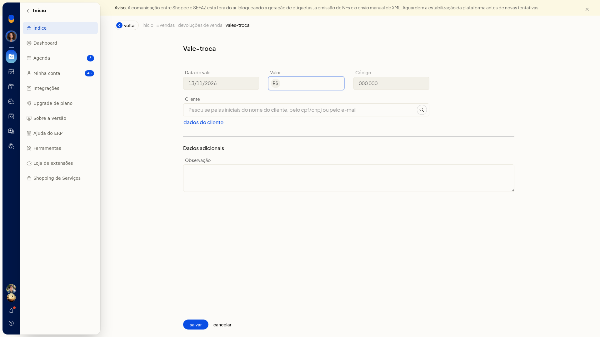
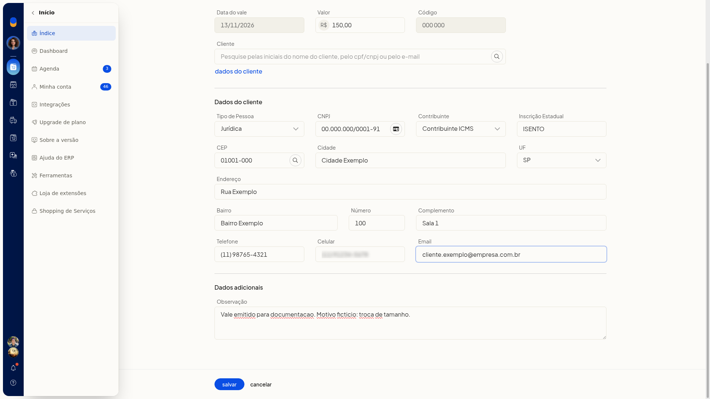

Incluir e consultar vales-troca nas devoluções de venda
No ERP da Olist, você consulta os vales-troca ligados às devoluções de venda e inclui um novo vale. Na lista, dá para localizar um vale pelo cliente, pelo código ou pelo período e separar os vales em aberto dos já utilizados.
Instruções
-
Acesse Vendas > Devoluções de venda.
-
Clique em Gerenciar vales-troca.

-
Busque pelo cliente ou pelo código do vale.
-
Filtre por período, se precisar.
-
Clique na aba Todos, Em aberto ou Utilizado.
-
Clique em Incluir vale-troca.

-
Confira a Data do vale, já preenchida no formato DD/MM/AAAA, e o Código exibido no formulário.
-
Informe o Valor em reais, com vírgula decimal.
-
No campo Cliente, pesquise pelas iniciais do nome, pelo CPF/CNPJ ou pelo email.
-
Clique em Dados do cliente.
Dados do cliente
- Selecione o Tipo de Pessoa: Jurídica, Física, Estrangeiro ou Estrangeiro no Brasil.
- Se o tipo for Jurídica, preencha CNPJ, Contribuinte e Inscrição Estadual.
- Informe o CEP com hífen ou clique em Buscar dados do CEP.
- Preencha Cidade, UF, Endereço, Bairro, Número e Complemento.
- Preencha Telefone, Celular e Email.

Dados adicionais
- Preencha Observação.

- Clique em Salvar.
Informações adicionais
- Marcar como utilizado e excluir o vale-troca só aparecem quando ele ainda está em aberto.